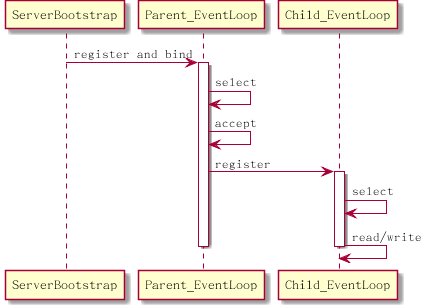

利用 Java NIO 提供的 multiplexing 和 non-blocking io 来处理网络请求 , 可以在同一个线程内使用 Selector 处理多个网络连接 , 节省了线程切换的开销，服务可以处理大量的并发连接 , 程序的性能得到提升 . 在 Java NIO 的基础上，Netty 规划了线程模型和事件处理结构 , 提供了抽象的接口来处理网络请求 , 保证了程序的可靠性和高性能 ...
和大多数的 Java 框架类似 , Netty 的设计非常复杂 , 代码中存在大量的继承关系，并且定义了很多 interface 来抽象各个模块之间相互依赖的接口 . 但是基本上 Netty 的设计结构还是逃不开并发编程常用的模式 (Patterns). 本文基于 Netty 4.X 版本，主要关注 Event Loop 和 Thread Model, 来分析基于 Netty NIO 的服务端设计和实现 .
Netty 中的 Concurrent Patterns
Netty 中使用的最基础的 pattern 是 Reactor, IO Multiplexing 由 Netty 来负责处理 , 并提供了 Handler 的注册和调用机制 . 当某一个 channel( 连接 ) 有可以进行的操作 (OP_READ/OP_WRITE/OP_ACCEPT/OP_CONNECT) 时，Netty 通过调用开发人员实现的 Handler 来进行处理 . 通过使用 Rector 模式 , 很好的隔离了底层的代码和上层的业务逻辑 . 开发人员基本上只需要关心实现 Event Handler. 另外，Netty 在 Reactor 的基础上使用 Acceptor-Connector 模式，将连接的建立初始化与具体的 IO 操作分开到不同的 Handler, 隔离和简化了实现逻辑 .
Netty 使用了多个线程来处理 Reactor. 这有点类似于 Leader-Follower 模式 , 在 Netty 中 , 线程被包装在 EventLoop 中 , 每一个 EventLoop 都会运行自己的 IO Multiplexing. 当有可以处理的 IO 操作时，EventLoop 会触发事件的派发 , 并且调用注册的 Event Handler, 也就是说 Event Handler 的调用是在当前的 EventLoop 的线程内进行的 . IO Multiplexing 和 Event Handle 的调用都是在 EventLoop 所在的线程 , 这一点符合 Leader-Follower 模式 , 但不同的是 , 在 Netty 中 , 进行连接建立的线程和处理 OP_READ/OP_WRITE 操作的线程是分开的 . Netty 中有两种 EventLoop, Parent EventLoop 来建立连接 . 已建立的连接则会被放入到 Child EventLoop 中处理 . 将 IO Multiplexing 和 Handler 的调用放到同一个线程中处理的方式被证明是高效的 , 相比较与此相对的另外一种模式 Half-Sync Half-Async, Leader-Follower 模式避免了线程之间的数据同步，避免了 CPU 的切换和 cache 的失效 . 在高并发的情况下 , 能提供更高的效率 .
Netty 支持 NIO(Nonblocking I/O) 和 OIO(Old Blocking I/O) 的 IO 模式 , 但本文主要关注的是使用 Netty NIO 进行服务端开发的情况 .
NioEventLoop 和 NioEventLoopGroup
在 Netty 中 , 进行 IO Multiplexing 并且处理 Handler 调用的模块被称为 EventLoop:
class NioEventLoop{
Selector selector; // selector for io multiplexing
SelectedSelectionKeySet selectedKeys; // selected keys
Thread thread; // thread to run NioEventLoop.run
Executor executor; // executor that initialize the thread
Queue<Runnable> taskQueue; // task queue
Queue<ScheduledFutureTask<?>> delayedTaskQueue; // scheduled task queue
}
前面提到过 , NioEventLoop 中包装了线程 , 用来执行 IO Multiplexing 和 Event Handling. 另外 , NioEventLoop 中还包含下面的三个成员 :
- selectedKeys: 包含经过
select之后 , 有ready事件的 key - taskQueue: NioEventLoop 除了运行
IO Multiplexing和Event Handling之外 , 还可以处理 Task, 一些 channel 相关的任务可以放到这个 queue 里 . 保证 channel 相关的操作都是在同一个NioEventLoop中执行 . - delayedTaskQueue: 用来保存定时的任务 (scheduled task), 定时任务同样会在
NioEventLoop中执行 .
NioEventLoop 初始化之后 , 当开始往 NioEventLoop 中的 taskQueue 添加任务时 , 这个操作会创建一个线程来执行 NioEventLoop 的 run 方法 :
1 2 3 4 5 6 7 8 9 10 11 12 13 14 | protected void run() {
for(;;) {
if(hasTask()) {
// if there is task in task queue, then just selectNow to ensure non-blocking
selectNow()
}
else {
select(); // timeout will be the duration to first scheduled task.
}
processSelectedKeys();
runAllTasks();
}
}
|
这个方法实际上就是 Reactor 模式中的 IO Multiplexing 和 Event Handling 部分 . 在 run 方法中 , NioEventLoop 中会处理前面提到的三种操作 :
- IO Multiplexing
- Task
- Scheduled Task
基本的思路是先找到所有可以运行的操作 , 包括 :
- 可以进行的 IO 操作 (
OP_READ/OP_WRITE/OP_ACCEPT) - Task Queue 中的 Task
- 已经到运行时间的 Scheduled Task
这里需要注意的有两点 :
- 如果 Task Queue 中有 Task, 那么会选择使用
selectNow，这个版本的操作会检查当前可以进行的 IO 操作 , 并立即返回 . - 当进行
select操作时，timeout 为最近可运行的 Scheduled Task 的运行时间 .
上面的两点都是保证当有可运行的任务时，EventLoop 不会在 IO Multiplexing 上做停留，而是尽快判断是否有可用的 IO 操作，然后开始进行事件分发和执行 Task.
在进行 select 操作之后 , EventLoop 会调用 processSelectedKeys() 来处理已经 ready 的操作 . 在这个函数中 , 会判断当前的 channel 可以进行的操作 , 并且根据可以进行的操作来调用对应的函数 :
| Operation | Invocation |
|---|---|
| READ/ACCEPT | channel.unsafe().read() |
| WRITE | channel.unsafe().forceFlush() |
从跟上面的表格可以看出来 , OP_READ 和 OP_ACCEPT 操作都是调用相同的接口 , 但实际上对应的 channel 类型不一样 , 在 read() 函数中实现了不同的操作 , 这个在后面会描述 .
具有相同功能的多个 EventLoop 则组成一个 EventLoopGroup. 类似下面的样子 :
class NioEventLoopGroup {
private NioEventLoop[] children;
}
前面提到 Netty 采用了 Boss 和 Worker 的方式来分别建立连接和数据 , 实际上 , Netty 将线程封装在 NioEventLoop 来进行工作 , Netty 中别的模块看到的是 NioEventLoop 和 NioEventLoopGroup. 可以将 NioEventLoopGroup 看成和 Thread Pool 类似的概念 , 当 channel 注册到 NioEventLoopGroup 中时 , NioEventLoopGroup 会顺序分配 group 中的某一个 NioEventLoop 来完成注册 , 随后 channel 的 select 将会交给分配到的 NioEventLoop 来完成 .
Socket Accept
当有了 EventLoop 之后 , 需要做的就是将连接注册到 EventLoop 中，在 Server 端 , 这个操作通过 ServerBootstrap 开始触发 , 首先 , ServerBootstrap 会进行下面的初始化工作 .
- 创建并设置 Boss EventLoop Group 和 Worker EventLoop Group
- 设置 channel 使用的 class 为 NioServerSocketChannel
- 设置 Handler
- 设置 Child Handler
在这里 , 本文只描述 class 为 NioServerSocketChannel 的情况 , NioServerSocketChannel 支持对其进行 bind 和 accept 操作 . 在进行初始化工作之后 , bootstrap 开始进行 EventLoop 注册和 Channel 绑定操作 , 分为三个步骤 :
- 初始化 channel, 在这个步骤 ,
NioServerSocketChannel会被创建 , 并且根据bootstrap时指定的 option 进行初始化 . 初始化之后再将ServerBootstrapAcceptor注册作为该channel的 Event Handler. - 初始化之后 , 该
channel会被注册到 Boss EventLoop Group. 如前面所描述 , 这个操作实际上是将channel和 Boss EventLoop Group 中的某一个 Event Loop 进行绑定 . - 在注册绑定之后 ,
channel最后进行绑定操作 , 将该 channel 绑定到指定的端口 .
在前面描述 EventLoop 的时候提到 , 经过 select 之后 , 如果有 ready 的事件 , EventLoop 首先会调用 channel 中的不同函数来完成操作 , 在这里 , 如果是 OP_ACCEPT 操作 , 那么实际上会调用 NioServerSocketChannel.unsafe().read(). read() 函数会做下面的两个步骤来完成这次 OP_ACCEPT 事件 :
- 循环调用
javaChannel().accept()来完成接受连接的建立 ( 可能有多个OP_ACCEPT操作 ) - 在每一次
accept操作之后 , 调用pipeline.fireChannelRead()发出channelRead事件 . - 循环结束之后调用
pipeline.fireChannelReadComplete来发出channelReadComplete事件 .
前面 bootstrap 的过程已经将 ServerBootstrapAcceptor 注册为 channel 的 Event Handler, 因此在这里当 accept 操作之后发出 channelRead 事件时 , 会调用 ServerBootstrapAcceptor 的 channelRead 方法 :
1 2 3 4 5 6 7 | public void channelRead(ChannelHandlerContext ctx, Object msg) {
final Channel child = (Channel) msg;
child.pipeline().addLast(childHandler); // 注册在 bootstrap 时设置的 channelHandler
// 将 child 注册到 worker EventLoopGroup
childGroup.register(child);
}
|
上面是一个简化的版本 , 从代码中可以看出来 , accept 之后的 channel 作为 msg 参数被传入到函数中 , 这个 channel 在函数中被称为 child. 函数做了下面的两件事情 :
- 将 bootstrap 时指定的 childHandler 注册为 child 的 Event Handler
- 将 child 注册到 Worker EventLoopGroup 中 .
这之后 , child channel 将由某一个选定的 EventLoop 进行处理 .
Socket Read
了解了 Socket Accpet 的过程之后 , Socket Read 的过程就比较容易理解了 , 两者基本上是相同的流程 , 不同的是 , Socket Accept 是在 Boss EventLoop 中进行处理 , 而 Socket Read 是在 Worker EventLoop 中进行处理 :
- 当 socket 的另一端写入数据 , 那么 channel 对应的 EventLoop 会
select到OP_READ事件 . - EventLoop 会调用
NioSocketChannel.unsafe().read(), 该函数会循环调用channel的read操作 , 读取数据到 buf 中 - 每一次 read 操作之后会发出
channelRead事件 , 并调用各个 Event Handler 进行处理 . - 当循环结束之后 , 发出
channelReadComplete事件 .
EventLoop 总结
根据上面的描述 , 在 Netty 中 , 实际上有两种类型的 EventLoop:
Parent EventLoop: 负责处理NioServerSocketChannel, 主要是OP_ACCEPT操作Child Eventloop: 负责处理NioSocketChannel, 主要处理OP_WRITE/OP_READ操作
通过使用 EventLoopGroup, 每一种 EventLoop 都可以有多个实例 ( 在 bootstrap 的时候指定 ).
在 Server 端使用 NIO 的情况下 , Parent EventLoop 和 Child EventLoop 的协作方式如下面的图所示 : 
- 首先是在
bootstrap的时候在进行 register 和 bind 操作的时候 , 会将创建的NioServerSocketChannel注册到Parent EventLoop中 . - 当有客户端连接时 ,
Parent EventLoop会 "select" 到OP_ACCEPT操作 , 如前面的描述 ,Parent EventLoop会调用NioServerSocketChannel的read方法来accept连接 , 然后通过ServerBootstrapAcceptor将新的NioSocketChannel注册到Child EventLoop. - 当客户端通过连接发送数据时 ,
Child EventLoop会 "select" 到OP_READ操作 , 这时候Child EventLoop会调用NioSocketChannel的read操作来读取数据 , 并且触发channelRead和channelReadComplete事件 .